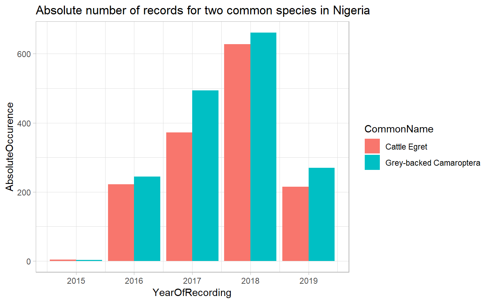
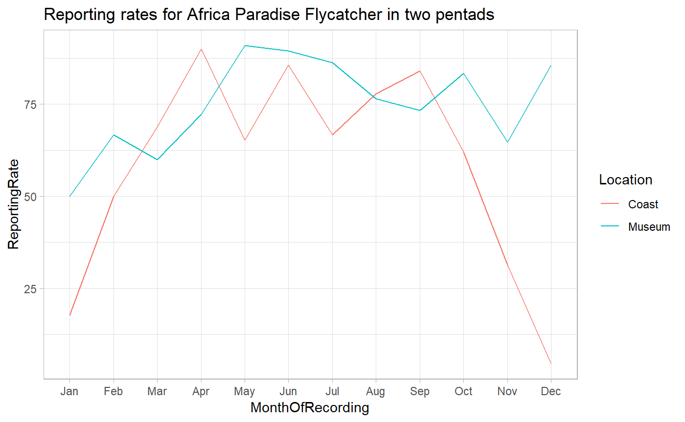

Extracting data with rabm
David Clarance
2019-07-21
rabm-vignette.RmdIntroduction
rabm makes extracting data from the Africa Bird Map easier and safer. It is built off an API developed and maintained by Michael Brooks.
The package has three primary extraction functions:
-
extract_observershelps to extract records using observers as the filtering unit. -
extract_specieshelps to extract records using species as the filtering unit. -
extract_allis meant to extract data without filtering for specific observers and species.
For all three functions, a time frame and geographical region must be specified.
In the following sections, we go through all three functions describing their inputs and behavior and providing once case study each. If you find errors, please contact David Clarance or make a pull request on Github.
Extracting Observer Data
To submit to the Africa Bird Map, an ‘observer’ must register an account. On doing so an observer number (also called citizen science number) is allocated. This number is the basis of quering the database for records pertaining to an observer.
Anatomy of the function
We begin by taking a quick dive into the function:
extract_observers( <----- This is the function name. It doesn't change.
observer_numbers, <----- Input the observer number or numbers. You can find these on the website.
start_date, <----- What date do you want to draw records starting from? The format is YYYY-MM-DD.
end_date, <----- What date do you want to draw records ending on? The format is YYYY-MM-DD.
region_type, <----- Here you specify what kind of regions you're working with (eg: country, pentad).
region_id, <----- Here you specify the value the region takes (eg: kenya, 0310_4000)
return_type, <----- For more advanced use. You don't need to specify this.
return_format <----- For more advanced use. You don't need to specify this.
)
Generally, users need to specify the observer number or numbers, the range they want to pull records in and the regions for which they’d like to pull records.
The definitions of the arguments are given below in detail:
-
observer_numbersA character or a vector of characters that represent the ADU number or numbers that you want to query the database for. Example: observer_numbers = ‘10723’ or observer_numbers = c(‘10723’, ‘40147’) -
start_dateA character representing the start date from which you want to query the database. It must be in the YYYY-MM-DD format. Defaults to 1 Jan,2019. Example: ‘2019-01-26’. -
end_dateA character representing the end date to which you want to query the database. It must be in the YYYY-MM-DD format. Defaults to 1 Feb, 2019. Example: ‘2019-02-26’. -
region_typeCan take one of the following types: country, pentad, group, qdgc. Default is ‘country’ -
region_idHas to be co-defined withregion_type. That is, it is an instantiation of theregion_type. For instance if theregion_type= ‘country’, then theregion_id= ‘kenya’. Or ifregion_type= ‘pentad’, thenregion_id= ‘3355_1825’. Default is ‘kenya’. -
return_typeThere are two options, ‘data’ and ‘count’. ‘data’ is the actual records submitted to the africa bird map. ‘count’ return a count of the rows. Default is ‘data’. -
return_formatDefault s ‘CSV’, though the API default is ‘JSON’
Depending on the return_format, the function will return a dataframe with the following:
-
return_type = dataA tidy dataframe is returned with the records that fall within the specification defined. -
return_type = countA tidy dataframe is returns with the number of rows that will be produced if the return_type was to be specified as ‘data’.
Case study: Exploring Doris Schaule’s contrbution
How would this work in practice?
Doris Schaule is one of Kenya’s most prolific mapper. Let’s explore some of her contributions to the Atlas in Kenya. It must be noted that Doris has contributed records outside Kenya (even in Germany!!), however for purposes of this exercise we will only focus on the records generated in Kenya.
The first step is to obtain Doris’ observer number. I did this by asking her. In theory, it is possible to build a function to get this number, however for privacy reasons I have refrained from doing so. Her number is 12939.
We first begin by loading packages required.
# first load the package
library(rabm) # to pull data from the Africa Bird Atlas
library(dplyr) # to analyze some of the data pulled
library(magrittr) # to pipe commands easily
library(ggplot2) # to to plot some of the data
library(lubridate) # for working with dates
library(tidyr) # more data manipulation functionsOnce that’s done, we’ll draw the raw data (each row is a record) for Doris. We’ll use this data to do some exploratory analysis.
# now get all records from 2007 to present date for Doris
doris_raw_records <- extract_observers(
observer_numbers = '12939',
start_date = '2007-01-01',
end_date = '2019-07-01',
region_type = 'country',
region_id = 'kenya'
)
#> Pulling data for 12939Now that we have the data, let’s take a look at how Doris has contributed to the bird atlas.
How many records has Doris contributed?
nrow(doris_raw_records)
#> [1] 20228As we can see above, Doris has contributed 20228 records. In reality, these will be more since some records might not have been vetted at the time of publishing this document.
How many full protocol cards has Doris contributed?
n_distinct(doris_raw_records$CardNo)
#> [1] 446How many pentads has Doris submitted FPs for?
n_distinct(doris_raw_records$Pentad)
#> [1] 68Again, there is a possibility that Doris has contributed far more. However, these will only enter the database once they have been vetted.
How many distinct species has Doris recorded in Kenya?
n_distinct(doris_raw_records$Spp)
#> [1] 531How has Doris’ contributions evolved over time?
doris_fp_per_year <- doris_raw_records %>%
# first find the number of cards recorded per year
mutate(YearOfRecord = year(StartDate)) %>%
group_by(YearOfRecord) %>%
summarize(
CardsRecorded = n_distinct(CardNo)
) %>%
ungroup()
# put the information into a nice graph
doris_fp_per_year %>%
ggplot(aes(x = YearOfRecord, y = CardsRecorded)) +
theme_light() +
geom_col() +
labs(title = "FP cards submitted by Doris by year",
caption = "Note: This graph does not contain FP cards that have not been vetted") 
If this isn’t impressive enough, let’s see how Doris’ contribution compares to all the other contributors in Kenya.
Let’s first get all records for Kenya. Don’t worry if you don’t recognize this function. We’ll get back to it later in the article.
all_kenya_records <- extract_all(
start_date = "2007-01-01",
end_date = "2019-07-01",
region_type = "country",
region_id = "kenya"
)Now let’s get the number of FP records submitted each year for all of Kenya but all observers.
all_fp_per_year <- all_kenya_records %>%
mutate(YearOfRecord = year(StartDate)) %>%
group_by(YearOfRecord) %>%
summarize(
CardsRecorded = n_distinct(CardNo)
) %>%
ungroup()How do Doris’ records figure in Kenya’s contributions?
doris_fp_per_year %>%
rename("DorisFPCards" = "CardsRecorded") %>%
left_join(all_fp_per_year, by = "YearOfRecord") %>%
rename("AllFPCards" = "CardsRecorded") %>%
mutate(OtherFPCards = AllFPCards - DorisFPCards) %>%
mutate(PercentageContributed = round((DorisFPCards / AllFPCards)*100, 2)) %>%
ggplot(aes(x = YearOfRecord, y = PercentageContributed)) +
geom_col() +
ggtitle("Percentage of Doris' contributions to Kenyan records",
subtitle = "There are 310 recorded observers in Kenya")
Doris has single handedly contributed ~10% of all Kenyan records.
Exploring species data
Each species recorded in the Africa Bird Atlas is assigned a species ID, referred to in the data as Spp. To pull data for a species, you’ll need to know it’s species Ids. There are two ways to figure out the Spp for a particular species.
Finding species Ids (Spp)
- If you want to quickly pull data for one species, I would recommend using the website to search and filter the Spp. Go to the species page here. Type in the common or scientific name for the species and use the number that appears.
- However, if you’re search for multiple species, the process can be a bit tedious. To make the process easier, you can use the library itself.
To find ids for multiple species, the first step is to pull the species list for a particular country. This can be done by using get_species_list() function. This function only takes one argument: the name of the country.
# get species list for nigeria
nigeria_species_list <- get_species_list("nigeria")
nigeria_species_list
#> # A tibble: 923 x 5
#> Spp Common_group Common_species Genus Species
#> <int> <chr> <chr> <chr> <chr>
#> 1 1109 Alethe Brown-chested Alethe poliocephala
#> 2 2540 Alethe Fire-crested Pseudalethe castanea
#> 3 2660 Ant-thrush White-tailed Neocossyphus poensis
#> 4 2650 Anteating-chat Northern Myrmecocichla aethiops
#> 5 1144 Antpecker Woodhouse's (Red-headed) Parmoptila woodhousei
#> 6 622 Apalis Bar-throated Apalis thoracica
#> 7 3078 Apalis Black-capped Apalis nigriceps
#> 8 3084 Apalis Black-collared Apalis pulchra
#> 9 3074 Apalis Black-throated Apalis jacksoni
#> 10 1099 Apalis Buff-throated Apalis rufogularis
#> # ... with 913 more rowsNow let’s say we wanted to find the species ids for a few common birds (sorry I don’t know my Nigerian birds well enough!). We’re interested in finding cattle egret, laughing dove, speckled pigeons.
To do this we’ll use the find_species() function. This function takes the species list and species names. You can use both common and scientific names.
interesting_species_names <- c("ibis bubulcus", "laughing dove", "speckled pigeon")
interesting_species_ids <- find_species(species_list = nigeria_species_list,
species_names = interesting_species_names)
interesting_species_ids
#> # A tibble: 3 x 6
#> Spp Common_group Common_species Genus Species SearchColumn
#> <int> <chr> <chr> <chr> <chr> <chr>
#> 1 61 Egret Cattle Bubulc~ ibis egret cattle bubulcus~
#> 2 317 Dove Laughing Strept~ senegal~ dove laughing strepto~
#> 3 311 Pigeon Speckled Columba guinea pigeon speckled colum~Anatomy of the function
We begin by taking a quick dive into the function:
extract_species( <----- This is the function name. It doesn't change.
species_ds, <----- Input the Spp. You can find these
start_date, <----- What date do you want to draw records starting from? The format is YYYY-MM-DD.
end_date, <----- What date do you want to draw records ending on? The format is YYYY-MM-DD.
region_type, <----- Here you specify what kind of regions you're working with (eg: country, pentad).
region_id, <----- Here you specify the value the region takes (eg: kenya, 0310_4000)
return_type, <----- For more advanced use. You don't need to specify this.
return_format <----- For more advanced use. You don't need to specify this.
)
The definitions of the arguments are detailed below:
-
species_idsA character or a vector of characters that represent the id or ids of the species. Example: observer_numbers = ‘10723’ or observer_numbers = c(‘10723’, ‘40147’) -
start_dateA character representing the start date from which you want to query the database. It must be in the YYYY-MM-DD format. Defaults to 1 Jan,2019. Example: ‘2019-01-26’. -
end_dateA character representing the end date to which you want to query the database. It must be in the YYYY-MM-DD format. Defaults to 1 Feb, 2019. Example: ‘2019-02-26’. -
region_typeCan take one of the following types: country, pentad, group, qdgc. Default is ‘country’ -
region_idHas to be co-defined withregion_type. That is, it is an instantiation of theregion_type. For instance if theregion_type= ‘country’, then theregion_id= ‘kenya’. Or ifregion_type= ‘pentad’, thenregion_id= ‘3355_1825’. Default is ‘kenya’. -
return_typeThere are two options, ‘data’ and ‘count’. ‘data’ is the actual records submitted to the africa bird map. ‘count’ return a count of the rows. Default is ‘data’. -
return_formatDefault is ‘CSV’, though the API default is ‘JSON’
Depending on the return_format, the function will return a dataframe with the following: 1. return_type = data A tidy dataframe is returned with the records that fall within the specification defined. 2. return_type = count A tidy dataframe is returns with the number of rows that will be produced if the return_type was to be specified as ‘data’.
Case Study: Cattle Egrets in Nigeria
Cattle Egrets are commonly found across Nigeria. They are easy to identify and often appear on full protocol lists.
We’ll first need to load the required packages. Since we have already loaded the packages, we won’t do it again.
Let’s start by getting all raw records for cattle egrets.
cegret_raw_records <- extract_species(
species_ids = 61,
start_date = '2007-01-01',
end_date = '2019-07-01',
region_type = 'country',
region_id = 'nigeria'
)
#> Pulling data for 61How many times has the cattle egret been recorded in Nigeria
nrow(cegret_raw_records)
#> [1] 1445How many pentads has the cattle egret been recorded in?
n_distinct(cegret_raw_records$Pentad)
#> [1] 962How many FP cards does the cattle egret appear in?
n_distinct(cegret_raw_records$CardNo)
#> [1] 1441By how many observers has the cattle egret been recorded?
n_distinct(cegret_raw_records$ObserverNo)
#> [1] 111How does the cattle egret figure against the Grey-backed Camaroptera?
First, lets get the species IDs for both.
common_species <- find_species(species_list = nigeria_species_list, species_names = c("cattle egret", "grey-backed camaroptera"))
common_species
#> # A tibble: 2 x 6
#> Spp Common_group Common_species Genus Species SearchColumn
#> <int> <chr> <chr> <chr> <chr> <chr>
#> 1 61 Egret Cattle Bubulc~ ibis egret cattle bubulcus ~
#> 2 628 Camaroptera Grey-backed Camaro~ brevic~ camaroptera grey-backe~Now let’s pull data for both across all of Nigeria.
common_raw_records <- extract_species(
species_ids = common_species$Spp,
start_date = '2007-01-01',
end_date = '2019-07-01',
region_type = 'country',
region_id = 'nigeria'
)
#> Pulling data for 61
#> Pulling data for 628Let’s look at absolute occurence across years in Nigeria
common_raw_records %>%
# first create a few columns needed
mutate(YearOfRecording = year(StartDate)) %>%
mutate(CommonName = glue::glue("{Common_species} {Common_group}")) %>%
# find aggregates by year
group_by(Spp, CommonName, YearOfRecording) %>%
summarize(
AbsoluteOccurence = n_distinct(CardNo)
) %>%
ungroup() %>%
# make a plot
ggplot(aes(x = YearOfRecording, y = AbsoluteOccurence, fill = CommonName)) +
theme_light() +
geom_col(position = "dodge") +
ggtitle("Absolute number of records for two common species in Nigeria")
Exploring unfiltered data
Very often you will require data across species and observers. This is where the extract_all function comes in use. This functions pulls all data for a specified date range and a specified region.
Anatomy of the function
We begin by taking a quick dive into the function:
extract_all( <----- This is the function name. It doesn't change.
start_date, <----- What date do you want to draw records starting from? The format is YYYY-MM-DD.
end_date, <----- What date do you want to draw records ending on? The format is YYYY-MM-DD.
region_type, <----- Here you specify what kind of regions you're working with (eg: country, pentad).
region_id, <----- Here you specify the value the region takes (eg: kenya, 0310_4000)
return_type, <----- For more advanced use. You don't need to specify this.
return_format <----- For more advanced use. You don't need to specify this.
)
The definitions of the arguments are detailed below:
-
start_dateA character representing the start date from which you want to query the database. It must be in the YYYY-MM-DD format. Defaults to 1 Jan,2019. Example: ‘2019-01-26’. -
end_dateA character representing the end date to which you want to query the database. It must be in the YYYY-MM-DD format. Defaults to 1 Feb, 2019. Example: ‘2019-02-26’. -
region_typeCan take one of the following types: country, pentad, group, qdgc. Default is ‘country’ -
region_idHas to be co-defined withregion_type. That is, it is an instantiation of theregion_type. For instance if theregion_type= ‘country’, then theregion_id= ‘kenya’. Or ifregion_type= ‘pentad’, thenregion_id= ‘3355_1825’. Default is ‘kenya’. -
return_typeThere are two options, ‘data’ and ‘count’. ‘data’ is the actual records submitted to the africa bird map. ‘count’ return a count of the rows. Default is ‘data’. -
return_formatDefault is ‘CSV’, though the API default is ‘JSON’
Depending on the return_format, the function will return a dataframe with the following: 1. return_type = data A tidy dataframe is returned with the records that fall within the specification defined. 2. return_type = count A tidy dataframe is returns with the number of rows that will be produced if the return_type was to be specified as ‘data’.
Case study: African Paradise Flycatchers
It is known that Africa Paradise Flycatchers have both a resident population and a migrating population in Kenya. The question we ask here is: Are these two groups equally distributed across the country, or does the migratory population only migrate to specific parts of the country?
To do this, we’ll look at data from two very well mapped pentads.
Pentad
0115_3645is in the heart of Nairobi and contains the National Museums of Kenya. We call this the museum pentad.Pentad
0355_3940is on the coast and is Doris’ home pentad. We call this the coast pentad.
Both pentads have more than a 100 full protocol lists submitted.
We first start by extract data for the two pentads.
raw_museum <- extract_all(
start_date = '2007-01-01',
end_date = '2018-12-31',
region_type = 'pentad',
region_id = '0115_3645'
)
raw_coast <- extract_all(
start_date = '2007-01-01',
end_date = '2018-12-31',
region_type = 'pentad',
region_id = '0355_3940'
)An alternate way to do the same would be to pull all data for Kenya using region_type = 'country' and region_id = kenya and then filter for the two pentads. The method above is faster.
Next we find the reporting rates for both pentads for each month.
apf_museum_monthly <- raw_museum %>%
mutate(MonthOfRecording = month(StartDate, label = TRUE)) %>%
group_by(MonthOfRecording) %>%
summarize(
TotalCards = n_distinct(CardNo),
TotalPresent = sum(Spp == 682),
RecordingRateMuseum = round((TotalPresent / TotalCards)*100, 2)
) %>%
ungroup() %>%
select(MonthOfRecording, Museum = RecordingRateMuseum)
apf_coast_monthly <- raw_coast %>%
mutate(MonthOfRecording = month(StartDate, label= TRUE)) %>%
group_by(MonthOfRecording) %>%
summarize(
TotalCards = n_distinct(CardNo),
TotalPresent = sum(Spp == 682),
RecordingRateCoast = round((TotalPresent / TotalCards)*100, 2)
) %>%
ungroup() %>%
select(MonthOfRecording, Coast = RecordingRateCoast)Finally we produce a graph that displays these two.
apf_museum_monthly %>%
left_join(., apf_coast_monthly, by = "MonthOfRecording") %>%
gather(Location, ReportingRate, Museum:Coast) %>%
ggplot(aes(x = MonthOfRecording, y = ReportingRate, color = Location, group = Location)) +
theme_light() +
geom_line() +
ggtitle("Reporting rates for Africa Paradise Flycatcher in two pentads")
This graph gives a solid indication that the migratory population goes through the coast. This comes with the caveat that this analysis is just meant to introduce the user to data extract and is not meant to be a statistically rigorous investigation.